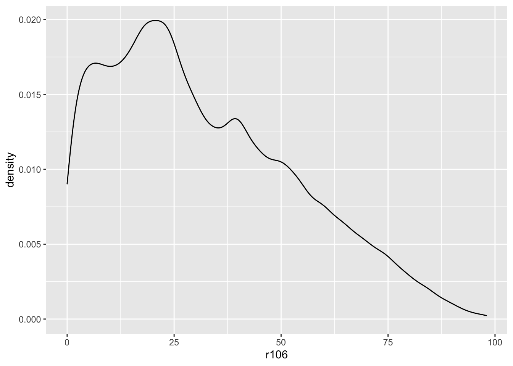

ehpm_2019 <-read_dta("datos/ehpm_2019.dta", encoding="latin1") %>% janitor::clean_names() # checa esto
Desde Excel:
ejemploxl <- readxl::read_excel("datos/ejemplo_xlsx.xlsx", sheet ="para_importar")%>% janitor::clean_names() # checa esto
New names:
• `` -> `...128`
• `` -> `...129`
• `` -> `...132`
• `PIB (Paridad de Poder Adquisitivo)` -> `PIB (Paridad de Poder
Adquisitivo)...135`
• `PIB (Paridad de Poder Adquisitivo)` -> `PIB (Paridad de Poder
Adquisitivo)...136`
• `PIB per cápita (Paridad de Poder Adquisitivo)` -> `PIB per cápita (Paridad
de Poder Adquisitivo)...137`
• `PIB per cápita (Paridad de Poder Adquisitivo)` -> `PIB per cápita (Paridad
de Poder Adquisitivo)...138`
• `PIB per cápita` -> `PIB per cápita...139`
• `PIB per cápita` -> `PIB per cápita...140`
• `PIB` -> `PIB...141`
• `PIB` -> `PIB...142`
4.3 Visualización de datos, un pequeño disclaimer
Hay cursos específicos de visualización de datos. Es maravilloso pero también requiere que estudiemos bien qué tipo de datos tenemos y cuáles son nuestros objetivos.
Para hacer un gráfico, ggplot2 tiene el comando “ggplot()”. Hacer gráficos con esta función tiene una lógica aditiva. Lo ideal es que iniciemos estableciendo el mapeo estético de nuestro gráfico, con el comando aes()
g1<-ehpm_2019 %>%ggplot(aes(as_label(pobreza)))g1 # imprime el lienzo
5.1 Gráficos univariados
5.1.1 Para cualitativas
g1 +geom_bar()
g1 +geom_bar(aes(fill =as_label(pobreza) )) # colorea la geometría
# Esto es equivalenteehpm_2019 %>%ggplot(aes(as_label(pobreza),fill =as_label(pobreza) ) ) +geom_bar()
5.1.2 Para variables cuantitativas
Podemos hacer histogramas y gráficos de densidad, de manera fácil. La idea es agregar en nuestro “lienzo” una geometría, un valor para dibujar en él. Esto se agrega con un “+” y con la figura que se añadirá a nuestro gráfico.
g2<-ehpm_2019 %>%ggplot(aes(r106))g2 # imprime el lienzo
5.1.2.1 Histograma
g2 +geom_histogram()
`stat_bin()` using `bins = 30`. Pick better value with `binwidth`.
5.1.2.2 Densidad
g2 +geom_density()

5.2 Intro a dos variables
Vamos a terminar con un código que resume mucho de lo que hemos visto hoy:
ehpm_2019 %>%filter(actpr2012==10) %>%# nos qur106mos sólo con los ocupadosselect(r106, money, aproba1) %>% GGally::ggpairs()